graph TD
1[Observation]
2[Hypothesis Formation]
3[Experimentation]
4[Data Collection]
5[Analysis]
6[Conclusion Drawing]
7[Peer Review]
8[Publication]
9[Continuous Improvement]
10[Application]
1 --> 2
2 --> 3
3 --> 4
4 --> 5
5 --> 6
6 --> 7
7 --> 8
8 --> 9
9 --> 10
10 --> 1
What is Scientific Research?

MdC. Fabio A. CRUZ SANCHEZ
Université de Lorraine | ENSGSI
Pr. Mauricio Camargo
2023-12-06
Objectives of the Module
- ü߆ Knowledge :
- Sensibilization onf the scientific research process and High Superior Education system
- üî® Know-how :
- Search on pertinent scientific databases
- Sensibilization of a crical thinking of research
- Identify a pertinent bibliography
- ‚úçCompetence :
- Be able to structure a scientific document presening the main components (Context, Problem, Research Question, Methodlogy and Results)
Evaluation of the Module
A final output will be putted on ARCHE.
Article of State of the Art about your Internship (7 pages).
- Title
- Abstract
- Résumé en anglais
- Résumé en français
- Synthèse (7 pages)
- References
Introduction to the Scientific Research
Agenda for today
Introduction to the Scientific Research
Why bother to study the scientific research?
Everything start with a good research question !
Presentation of TD
Research in the context of France
What are the difference between
Engineering and Research (in Innovation) ?
Engineering vs Research (in Innovation)
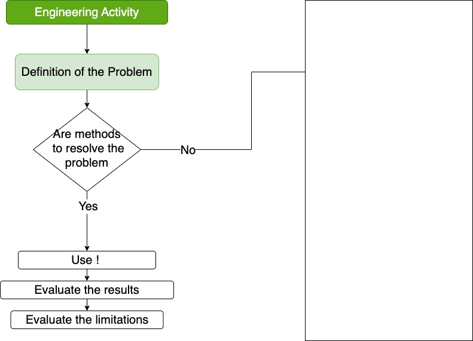
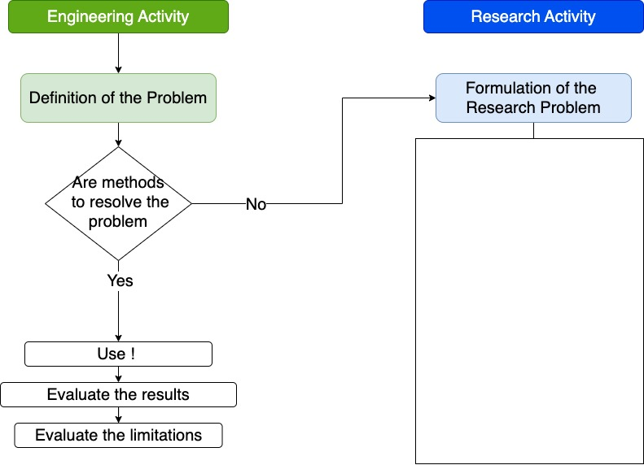
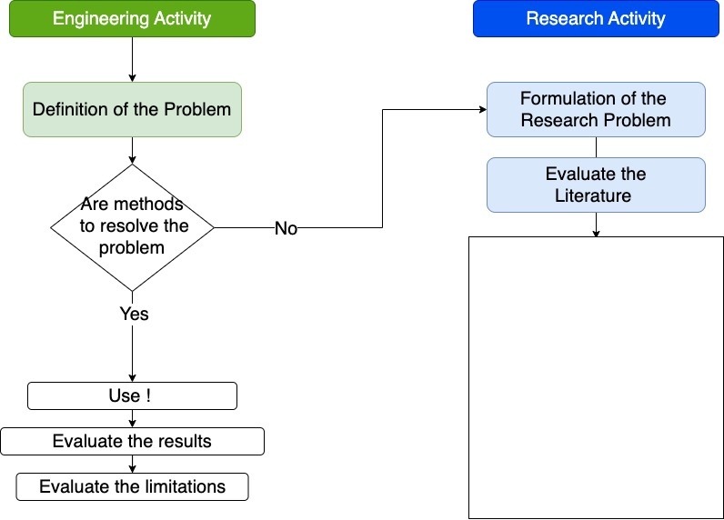
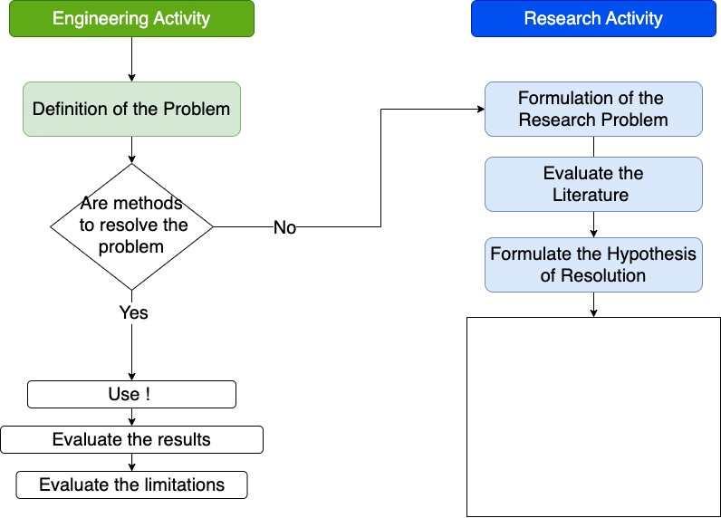
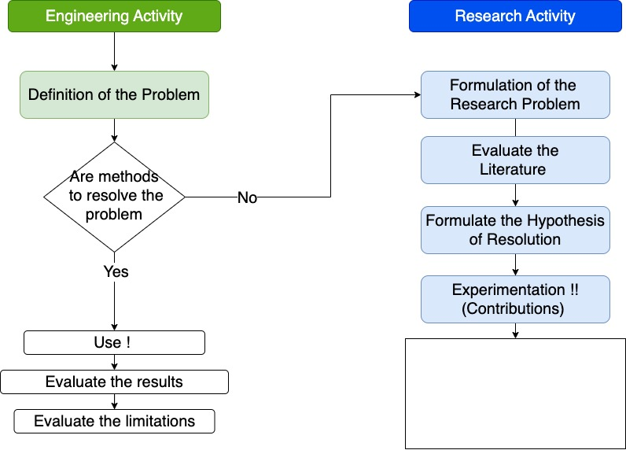
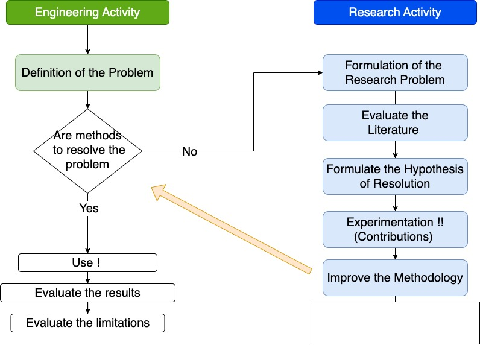
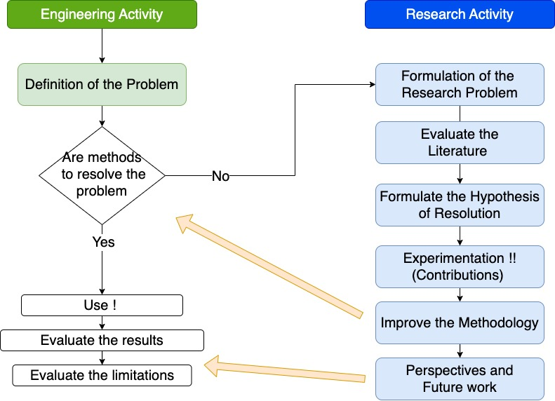
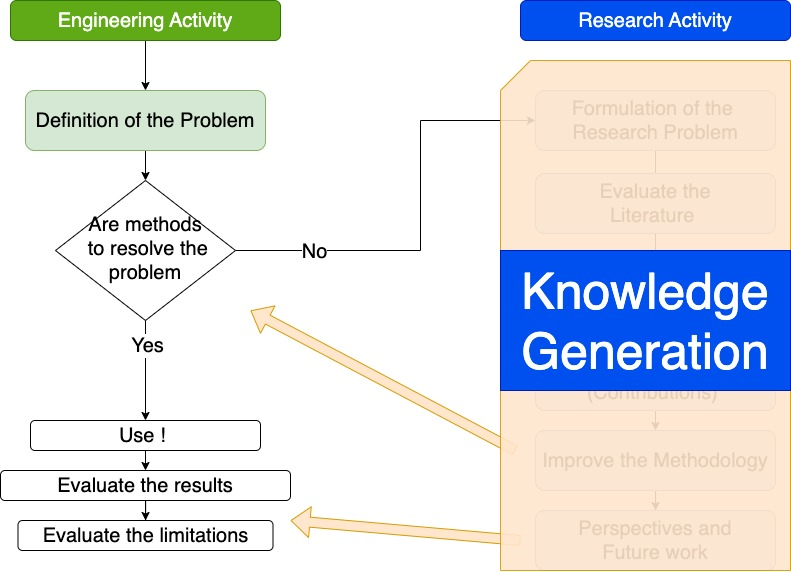
What is scientific research ?
“The process of finding solutions to a problem after a thorough study and analysis of the situational factors.” (Sekaran and Bougie 2016)
Based on two research elements:
üîé Observations (information or data)
üí° Theory (arguments)


Inductive vs Deductive Research ?

Scientific approaches

Scientific approaches
Deduction
la méthode par laquelle on va de la cause aux effets, du principe aux conséquences, du général au particulier.
Induction
La règle découle de l’observation répétée de faits réels, contingents.
Mental model for the research development?

Why bother to study the scientific research?
Agenda for today
Introduction to the Scientific Research
Why bother to study the scientific research?
Everything start with a good research question !
Presentation of TD
Research in the context of France
Pourquoi devrais-je me renseigner sur le processus de recherche ?
Research and the “Managers”
ü•º To work as a researcher (PhD., R&D Department)
üó£Ô∏è To become a pertinent intelocutor at your company
⚖️ Help to make evidence-based decisions: e.g. Public politics
üîÆ Help in the strategic and future decision-making
As an Innovation Manager you are going to face problems that your R&D department or/and external researcher (open-innovation) can help you to solve.
Why a company would bother literature review ?
Technology Readiness ‚Üí Maturity
The industrial emergence mapping framework.

On the case of Entreprise
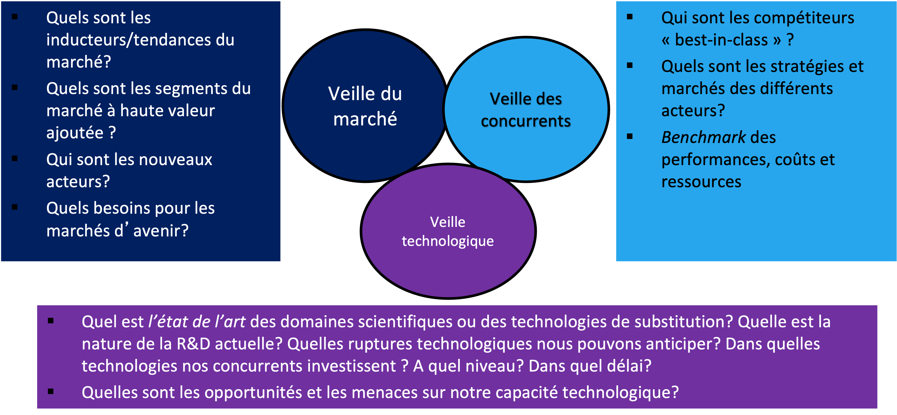Technology Readiness ‚Üí Levels
Framework developed in the Aeronautical field.
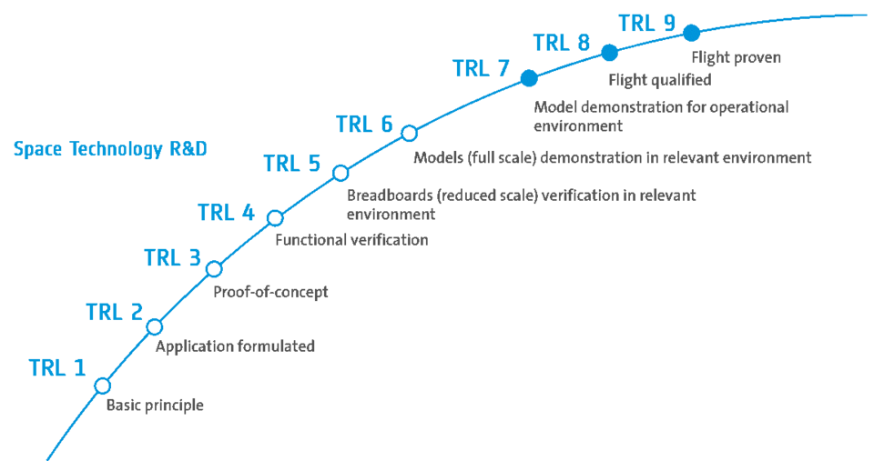Technology Readiness ‚Üí The Valley of Death
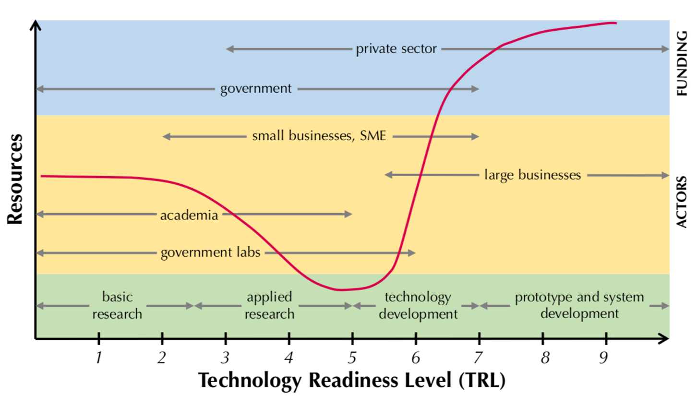
Technology Readiness ‚Üí Challenges TRL4 - TRL7

Technology Readiness ‚Üí Challenges TRL4 - TRL7
- There is a lack of tools that can provide insights into technology-integration issues at an early R&D phase (TRL 1-5).
- This results in a mismatch between information need and availability and complicates decision-making.
- The process requires an interdisciplinary approach. The right combination of skills and expertise may not always be available
Technology Readiness ‚Üí Evolution


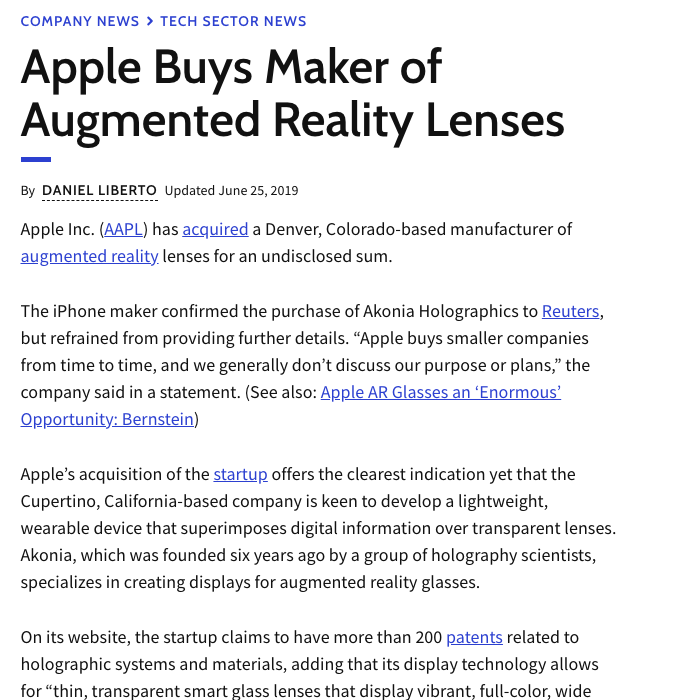

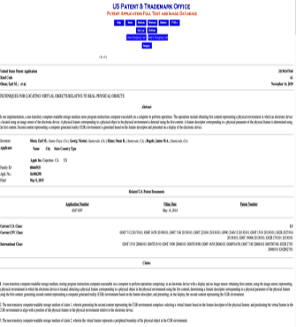
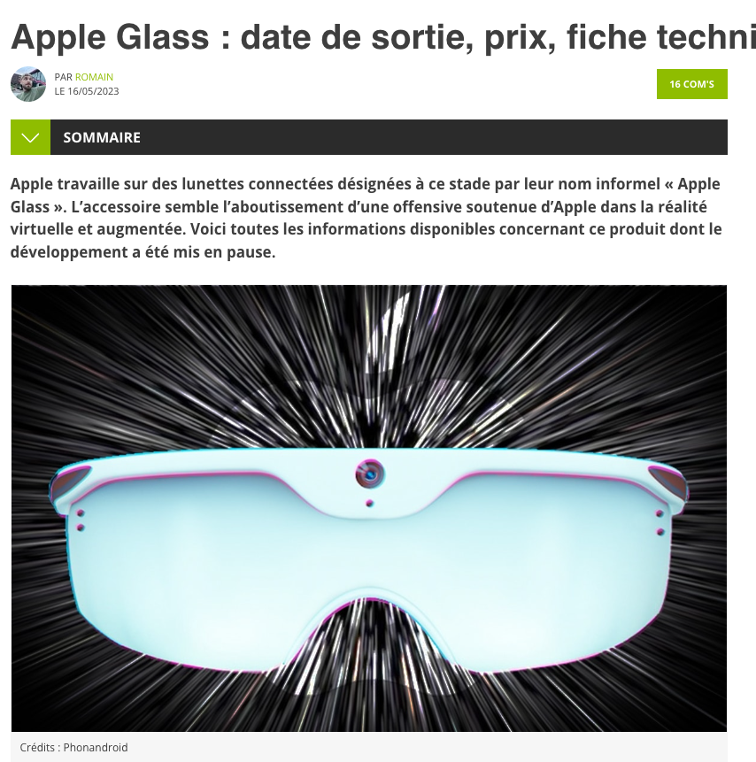
What the difference these two googles?
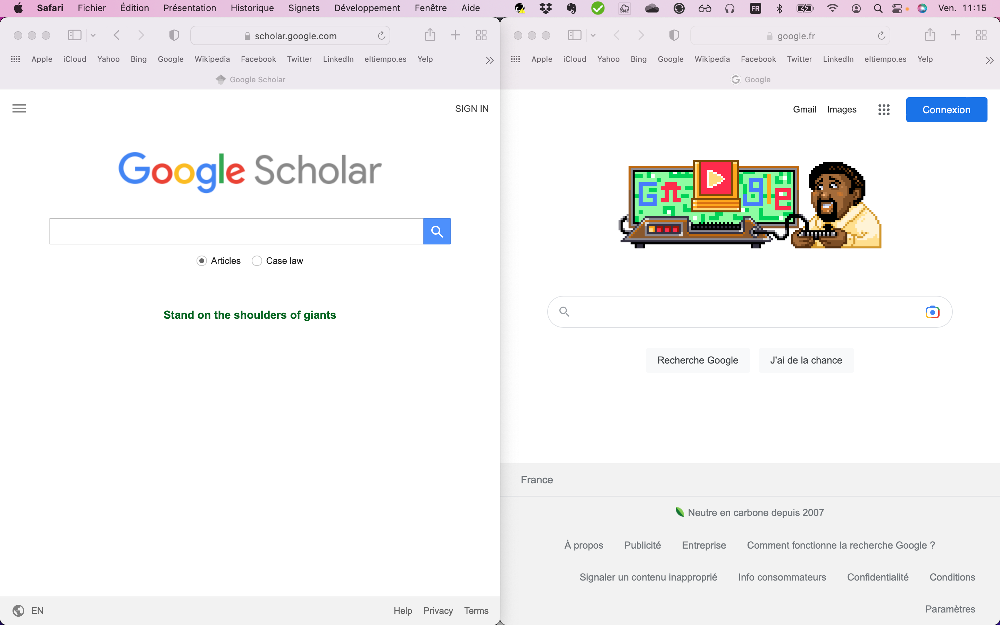Peer Reviewing process
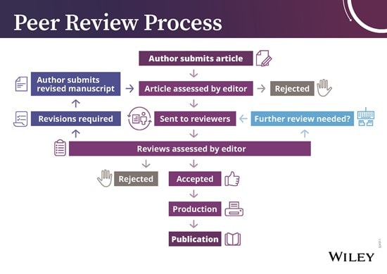Literature review
Standing on the shoulders of giants
- Scientific databases
- Research papers
- Books
- Institutional reports -> WHO, EU…
- Societies
- conferences proceedings (IEEE, IAMOT, IFAC…)
- Institutional repositories -> dissertations
- IP registrars -> Patents
Web of science ‚Üí Scientific & Patent databases
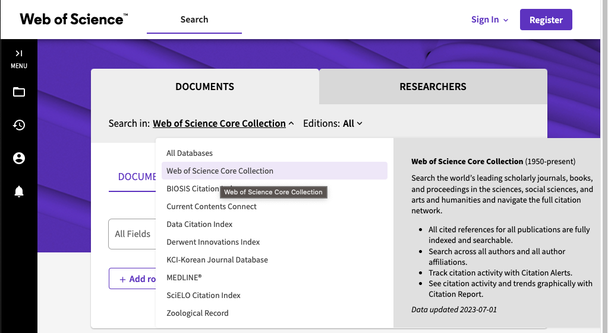
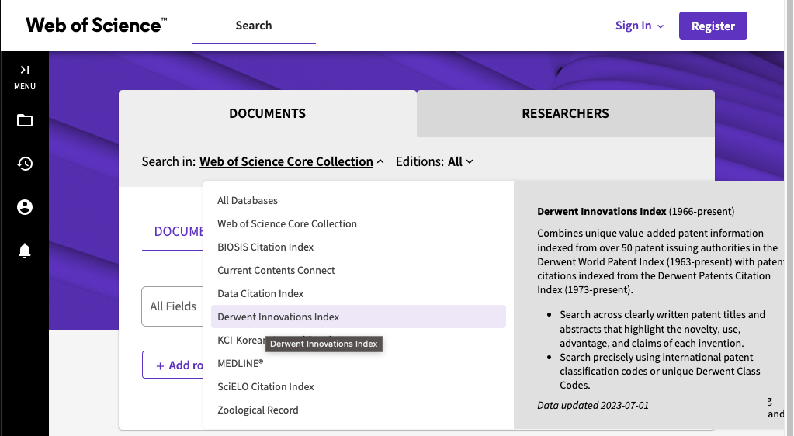
Everything start with a good research question !
Agenda for today
Introduction to the Scientific Research
Why bother to study the scientific research?
Everything start with a good research question !
Presentation of TD
Research in the context of France
Everything start with a good research question
- Descriptive: (‘What’, ‘When’, ‘Where’, ‘Who’ or ‘How’)
e.g. ’What percentage of coachees
report that coaching helped them
with a problem they experienced?
- Explanatory (‘Why’?)
e.g. ‘Why did 65% of coachees report that coaching helped them with a problem they experienced?’
Good research question: Descriptive + Explanatory
Being able to provide meaningful explanations requires answers to ‘why’ (i.e. explanatory) questions in addition to ‘what’ (i.e. descriptive) questions.
For example:
‘How effective is the coaching process at helping coachees to solve a problem they experience and what are the reasons for this?’
‘To what extent is the coaching process effective at helping coachees solve a problem and why?’
What kind of type of research can we do?
What kind of type of research can we do?
- Basic Vs. Applied
- Exploratory
- Descriptive
- Causal
What kind of type of research can we do?
- Basic Vs. Applied
- Exploratory
- Descriptive
- Causal
- Not much is known about a particular phenomenon;
- Existing research results are unclear or suffer from serious limitations;
- The topic is highly complex; or
- There is not enough theory available to guide the development of a theoretical framework
e.g: AI and its influence in the future?, Decroissance?
What kind of type of research can we do?
- Basic Vs. Applied
- Exploratory
- Descriptive
- Causal
- Obtain data that describes the topic of interest
- Understand the characteristics of a group in a given situation
- Think systematically about aspects in a given situation
e.g: Social Media Usage Patterns, Workplace Satisfaction Surveys, Consumer Behavior Studies, etc…
What kind of type of research can we do?
- Basic Vs. Applied
- Exploratory
- Descriptive
- Causal
- Whether or not A causes change to B
- X causes variable Y. So, when variable X is removed or altered in some way, problem Y is solved
e.g: Impact of (Educational, Recycling, Motivation, Training …) Interventions, Efficacy of Medical Treatments, Causal loops, etc…
Quantitative vs Qualitative

Big data Vs Thick data
Examples of ERPI Research

In summary
The Art of Design Research
Research design
Approaches of the
Research design
Creswell, J. W.: Research Design: Qualitative, Quantitative and Mixed Methods Approaches, 2nd edition, Sage Publications, Inc, California, 246 pp., 2003.
The Research Onion
Presentation of TD
Agenda for today
Introduction to the Scientific Research
Why bother to study the scientific research?
Everything start with a good research question !
Presentation of TD
Research in the context of France
Mental model of the research process
Research conceptualization
The Exercises
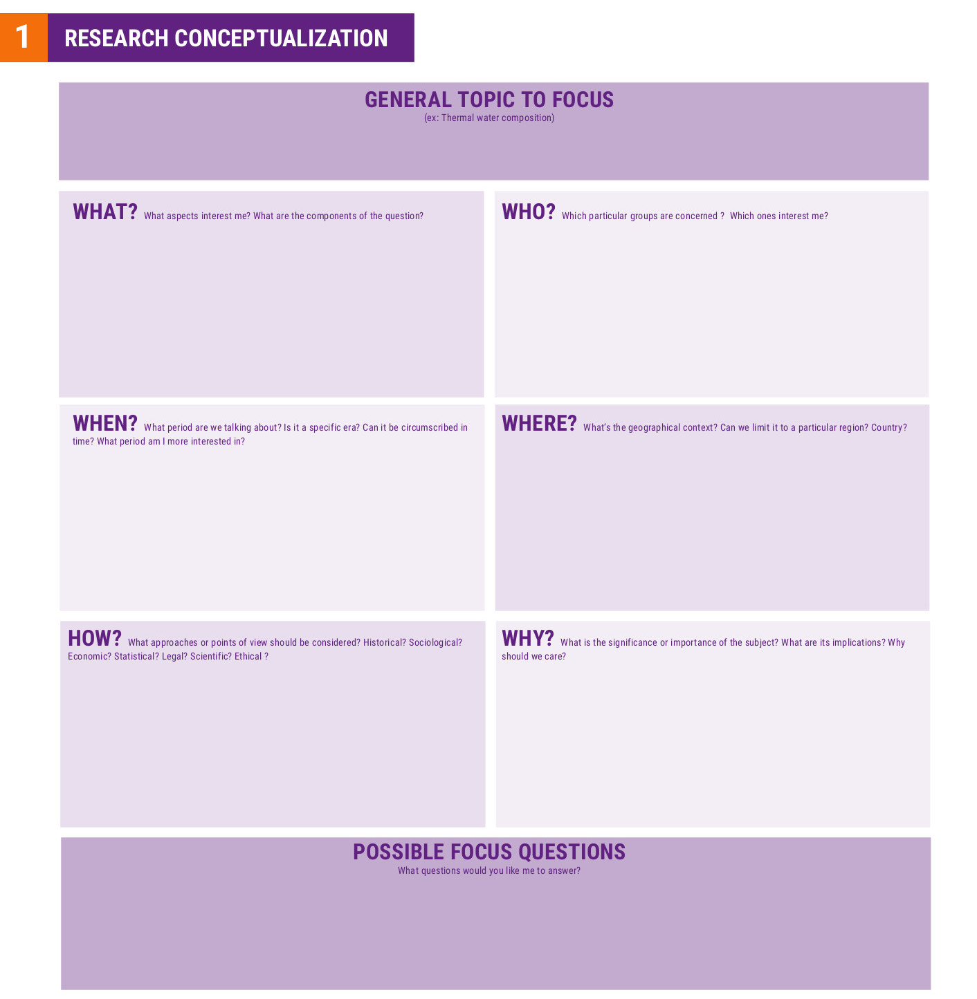
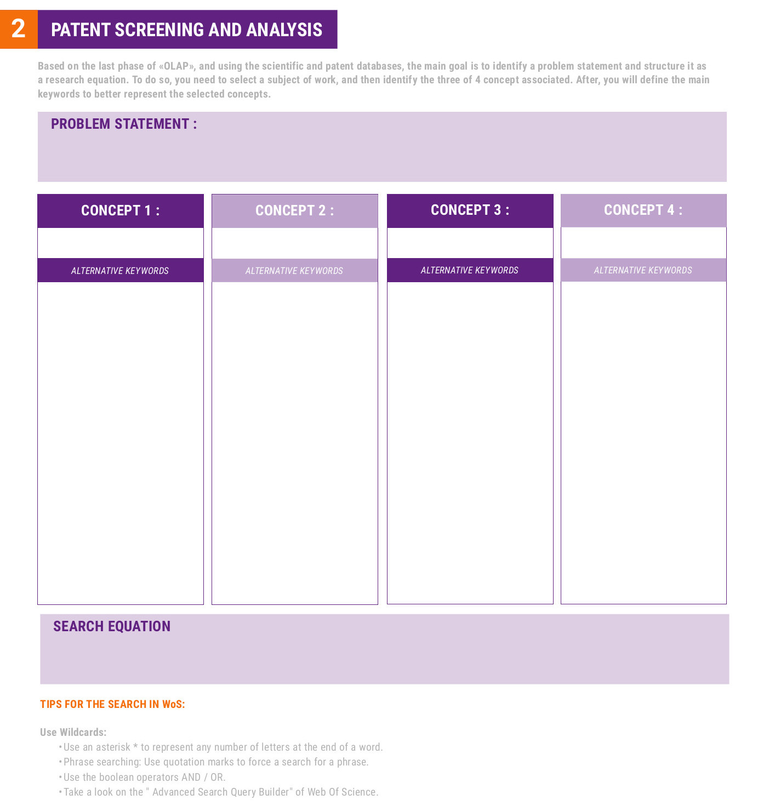
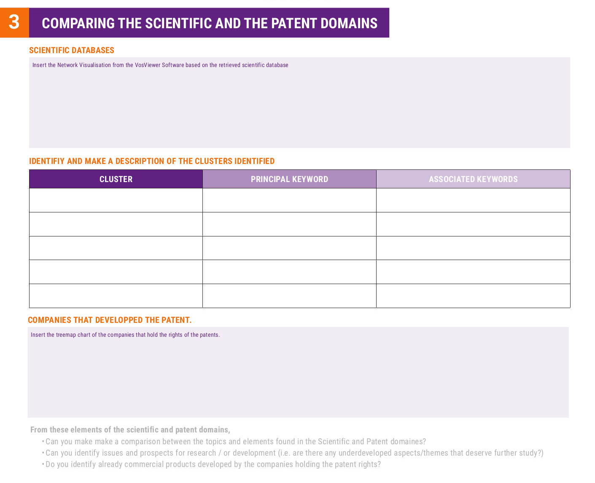
Bibliometric mapping: Vosviewer
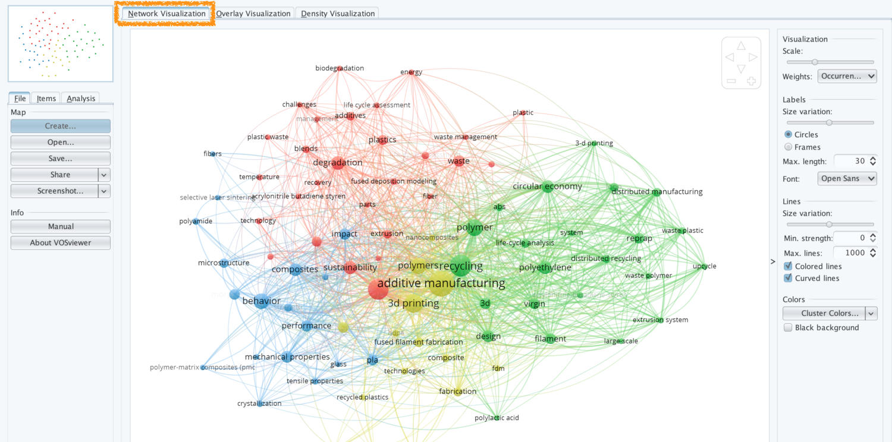
Research in the context of France
Agenda for today
Introduction to the Scientific Research
Why bother to study the scientific research?
Everything start with a good research question !
Presentation of TD
Research in the context of France
Research Ecosystem in general

Research Ecosystem in France
Teaching and research
- Universities (IUT, Ecoles d’ingénieurs)
- INSA , ENSI , CNAM , …
Private companies (Big/Smee’s)
Sagem; Véolia; PSA Thales
TEA; JEI; FITLE; myXtramile…
Funding Agencies
National & EU - Ministeries - ANR - ADEME
Science and technology observatory (OST)
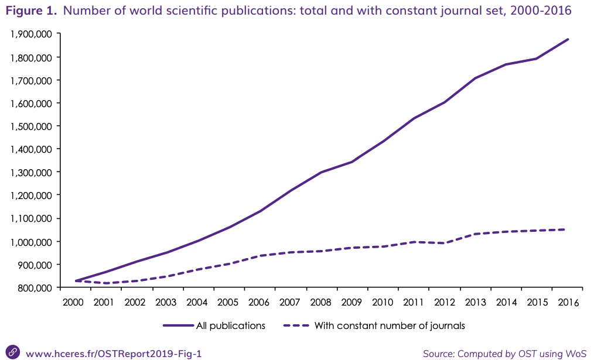
Science and technology observatory (OST)

Science and technology observatory (OST)
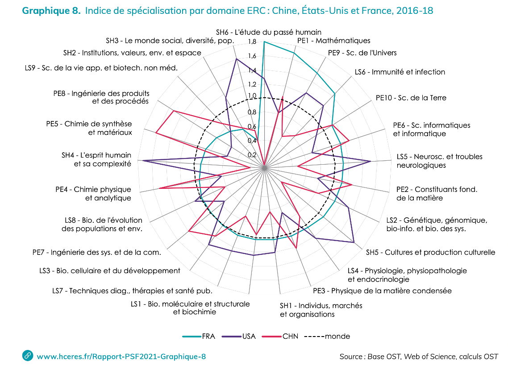
Thanks
Introduction to Scientific Research